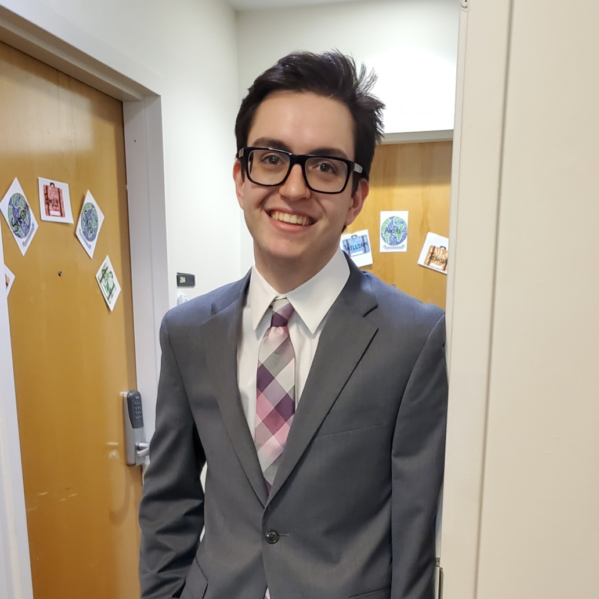

About Me
I grew up in the Northern Chicagoland area, and moved to Boston for university. I am completing my undergraduate at Northeastern, and with the help of my Computer Science degree, want to go into software development. A lot of my time spent outside of schoolwork is playing with music ensembles on campus, and I hope to continue performing even after school is done. Other than that, I really enjoy tabletop and video games, longboarding around the city, and camping.


Contact Info:
- Email: henderson.b@northeastern.edu